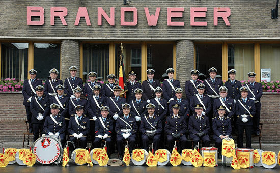

Het muziekkorps van brandweer Oudenaarde werd in zijn huidige formatie van klaroenen en tamboers gesticht in 1962 en stond in de beginfase onder leiding van Gaston Combel.
Deze formatie is een voortzetting van een vroegere harmonie verbonden aan Brandweer Oudenaarde waarvan de spelende leden niet noodzakelijk brandweerman of ére-brandweerman waren, deze vroegere harmonie werd gesticht in 1893 met als eerste dirigent Edgard De Tremmerie.
Eén van de latere dirigenten van de oorspronkelijke harmonie was Octaaf Vandevelde die tevens dirigent was van de Koninklijke Stadsharmonie, want vele leden van de Brandweerharmonie speelden immers ook in deze Stadsharmonie.
Door de jaren heen werd afgestapt van dit principe waardoor de laatste tientallen jaren het muziekkorps exlusief bestaat uit actieve brandweermannen van het brandweerkorps Oudenaarde enkel aangevuld met ére-brandweermannen.
De huidige bezetting is als volgt:
Het muziekkorps staat sinds 1981 onder de muzikale leiding van ére Sgt. Gaston Verplanken (Sgt op rust sederd 1981) en geregeld zijn er op zondagvoormiddag repetities in de kazerne.
Hoofdzakelijk worden er stapmarsen gespeeld waaronder enkele van eigen hand, en ieder jaar worden wij wel uitgenodigd manifestaties zoals opendeurdagen, vieringen enz.... .